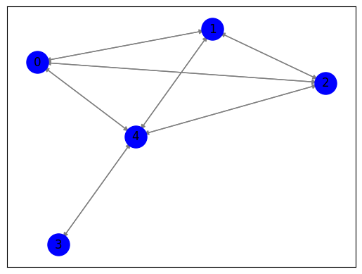

Closeness centrality ke 2#
**Kita cek terlebih dahulu website tersebut bisa kita crawling apa tidak **
import requests
url = "https://www.jpnn.com/"
response = requests.get(url)
# Periksa status code
if response.status_code == 200:
print("Halaman berhasil diakses.")
elif response.status_code == 404:
print("Halaman tidak ditemukan.")
else:
print(f"Terjadi kesalahan. Status code: {response.status_code}")
Halaman berhasil diakses.
Langkah 1: Crawl data judul berita dan isi berita dari https://jpnn.com/#
Politik#
import requests
import pandas as pd
from bs4 import BeautifulSoup
from datetime import date, timedelta
# get_article_content(article_url) digunakan untuk mengambil konten artikel dari URL yang diberikan.
def get_article_content(article_url):
response = requests.get(article_url)
# untuk memeriksa apakah status kode respons adalah 200, yang berarti permintaan berhasil kemudian mengambil konten artikel dari elemen div
if response.status_code == 200:
soup = BeautifulSoup(response.text, 'html.parser')
article_content = soup.find('div', itemprop="articleBody").find_all('p')
content = '\n'.join([p.get_text() for p in article_content])
return content
return ""
# scrape_news_data(start_date, end_date) digunakan untuk mengambil data berita dari situs web jpnn.com dalam rentang tanggal tertentu.
def scrape_news_data(start_date, end_date):
base_url = "https://www.jpnn.com/indeks?id=248&d={day}&m={month}&y={year}&tab=all"
data = []
current_date = start_date
while current_date <= end_date:
url = base_url.format(day=current_date.day, month=current_date.month, year=current_date.year)
response = requests.get(url)
# untuk memeriksa apakah status kode respons adalah 200, yang berarti permintaan berhasil kemudian mengambil judul berita dari elemen div
if response.status_code == 200:
soup = BeautifulSoup(response.text, 'html.parser')
news_elements = soup.find('div', class_="content").find_all('h1')
for element in news_elements:
title = element.a.text
article_url = element.a['href']
content = get_article_content(article_url)
# Data berita disimpan dalam sebuah list dictionary dengan kunci 'Date', 'Title', dan 'Content'
data.append({'Date': current_date.strftime('%d-%m-%Y'), 'Title': title, 'Content': content})
current_date += timedelta(days=1)
else:
print(f"Failed to fetch data for {current_date.strftime('%d-%m-%Y')}")
return data
# Untuk menentukan rentang waktu untuk pengambilan data berita.
from datetime import date, timedelta
start_date = date(2023, 10, 1)
end_date = date(2023, 11, 1)
news_data = scrape_news_data(start_date, end_date)
---------------------------------------------------------------------------
KeyboardInterrupt Traceback (most recent call last)
<ipython-input-2-484a5ff8a0e3> in <cell line: 52>()
50 end_date = date(2023, 11, 1)
51
---> 52 news_data = scrape_news_data(start_date, end_date)
<ipython-input-2-484a5ff8a0e3> in scrape_news_data(start_date, end_date)
34 title = element.a.text
35 article_url = element.a['href']
---> 36 content = get_article_content(article_url)
37
38 # Data berita disimpan dalam sebuah list dictionary dengan kunci 'Date', 'Title', dan 'Content'
<ipython-input-2-484a5ff8a0e3> in get_article_content(article_url)
10 # untuk memeriksa apakah status kode respons adalah 200, yang berarti permintaan berhasil kemudian mengambil konten artikel dari elemen div
11 if response.status_code == 200:
---> 12 soup = BeautifulSoup(response.text, 'html.parser')
13 article_content = soup.find('div', itemprop="articleBody").find_all('p')
14 content = '\n'.join([p.get_text() for p in article_content])
/usr/local/lib/python3.10/dist-packages/bs4/__init__.py in __init__(self, markup, features, builder, parse_only, from_encoding, exclude_encodings, element_classes, **kwargs)
331 self.builder.initialize_soup(self)
332 try:
--> 333 self._feed()
334 success = True
335 break
/usr/local/lib/python3.10/dist-packages/bs4/__init__.py in _feed(self)
450 self.builder.reset()
451
--> 452 self.builder.feed(self.markup)
453 # Close out any unfinished strings and close all the open tags.
454 self.endData()
/usr/local/lib/python3.10/dist-packages/bs4/builder/_htmlparser.py in feed(self, markup)
360 parser = BeautifulSoupHTMLParser(*args, **kwargs)
361 parser.soup = self.soup
--> 362 parser.feed(markup)
363 parser.close()
364 parser.already_closed_empty_element = []
/usr/lib/python3.10/html/parser.py in feed(self, data)
108 """
109 self.rawdata = self.rawdata + data
--> 110 self.goahead(0)
111
112 def close(self):
/usr/lib/python3.10/html/parser.py in goahead(self, end)
162 self.handle_data(unescape(rawdata[i:j]))
163 else:
--> 164 self.handle_data(rawdata[i:j])
165 i = self.updatepos(i, j)
166 if i == n: break
/usr/local/lib/python3.10/dist-packages/bs4/builder/_htmlparser.py in handle_data(self, data)
159 self.soup.handle_endtag(name)
160
--> 161 def handle_data(self, data):
162 """Handle some textual data that shows up between tags."""
163 self.soup.handle_data(data)
KeyboardInterrupt:
# Untuk membuat DataFrame dari data berita yang dikumpulkan oleh fungsi scrape_news_data(start_date, end_date)
df = pd.DataFrame(news_data)
# untuk menghapus karakter baris baru ('\n') dari kolom 'Title' dalam DataFrame df
df['Title'] = df['Title'].str.replace('\n', '')
# menambahkan kolom baru bernama 'Label' ke dalam DataFrame df dan mengisinya dengan nilai 'politik' untuk setiap baris
df['Label'] = 'politik'
# menampilkan data
df
| Date | Title | Content | Label | |
|---|---|---|---|---|
| 0 | 01-10-2023 | Megawati Ungkap Orang Luar Tak Bisa Langsung J... | jpnn.com, JAKARTA - Ketua Umum PDI Perjuangan ... | politik |
| 1 | 01-10-2023 | Peringati Hari Kesaktian Pancasila, KawanJuang... | jpnn.com, PURWAKARTA - Para sukarelawan penduk... | politik |
| 2 | 01-10-2023 | Ganjar dan Anies Hadiri Acara IdeaFest, di Man... | jpnn.com, JAKARTA - Ketiga bacapres Ganjar Pra... | politik |
| 3 | 01-10-2023 | Silaturahmi ke Rembang, Anies Diberi Tongkat K... | jpnn.com, JAKARTA - Anies Baswedan mengunjungi... | politik |
| 4 | 01-10-2023 | Survei Erick Thohir Teratas di Jatim, Pengamat... | jpnn.com, JAKARTA - Nama Erick Thohir punya ke... | politik |
| ... | ... | ... | ... | ... |
| 635 | 01-11-2023 | Ribuan Warga Aceh Berzikir & Selawat Bersama A... | jpnn.com, ACEH UTARA - Puluhan ribu rakyat Ace... | politik |
| 636 | 01-11-2023 | Mendagri Tito Karnavian Dorong Polri Aktif Awa... | jpnn.com, JAKARTA - Menteri Dalam Negeri (Men... | politik |
| 637 | 01-11-2023 | PKPU Nomor 19 Sudah Direvisi, tetapi Gibran Be... | jpnn.com - JAKARTA - Komisi II DPR RI dan peme... | politik |
| 638 | 01-11-2023 | Survei: Masyarakat Jateng Mulai Masif Mendukun... | jpnn.com - JAKARTA - Hasil survei terbaru Poll... | politik |
| 639 | 01-11-2023 | Ujang: Jokowi Ingin Menunjukkan Power, Tanpa P... | jpnn.com, JAKARTA - Pengamat politik dari Univ... | politik |
640 rows × 4 columns
# Simpan DataFrame ke file CSV
df.to_csv('jnn_politik_news.csv', index=False)
Ekonomi#
import requests
import pandas as pd
from bs4 import BeautifulSoup
from datetime import date, timedelta
# get_article_content(article_url) digunakan untuk mengambil konten artikel dari URL yang diberikan.
def get_article_content(article_url):
response = requests.get(article_url)
# untuk memeriksa apakah status kode respons adalah 200, yang berarti permintaan berhasil kemudian mengambil konten artikel dari elemen div
if response.status_code == 200:
soup = BeautifulSoup(response.text, 'html.parser')
article_content = soup.find('div', itemprop="articleBody").find_all('p')
content = '\n'.join([p.get_text() for p in article_content])
return content
return ""
# scrape_news_data(start_date, end_date) digunakan untuk mengambil data berita dari situs web jpnn.com dalam rentang tanggal tertentu.
def scrape_news_data(start_date, end_date):
base_url = "https://www.jpnn.com/indeks?id=216&d=01&m=10&y=2023&tab=all"
data = []
current_date = start_date
while current_date <= end_date:
url = base_url.format(day=current_date.day, month=current_date.month, year=current_date.year)
response = requests.get(url)
# untuk memeriksa apakah status kode respons adalah 200, yang berarti permintaan berhasil kemudian mengambil judul berita dari elemen div
if response.status_code == 200:
soup = BeautifulSoup(response.text, 'html.parser')
news_elements = soup.find('div', class_="content").find_all('h1')
for element in news_elements:
title = element.a.text
article_url = element.a['href']
content = get_article_content(article_url)
# Data berita disimpan dalam sebuah list dictionary dengan kunci 'Date', 'Title', dan 'Content'
data.append({'Date': current_date.strftime('%d-%m-%Y'), 'Title': title, 'Content': content})
current_date += timedelta(days=1)
else:
print(f"Failed to fetch data for {current_date.strftime('%d-%m-%Y')}")
return data
# Untuk menentukan rentang waktu untuk pengambilan data berita.
from datetime import date, timedelta
start_date = date(2023, 10, 1)
end_date = date(2023, 11, 1)
news_data = scrape_news_data(start_date, end_date)
# Untuk membuat DataFrame dari data berita yang dikumpulkan oleh fungsi scrape_news_data(start_date, end_date)
df2 = pd.DataFrame(news_data)
# menghapus karakter tab ('\t') dari kolom 'Title' dan karakter baris baru ('\n') dari kolom 'Content'
df2['Title'] = df2['Title'].str.replace('\t', '')
df2['Content'] = df2['Content'].str.replace('\n', '')
# menambahkan kolom baru bernama 'Label' ke dalam DataFrame df dan mengisinya dengan nilai 'Ekonomi' untuk setiap baris
df2['Label'] = 'Ekonomi'
# menampilkan data
df2
| Date | Title | Content | Label | |
|---|---|---|---|---|
| 0 | 01-10-2023 | Erick Thohir Mengaku Jatuh Cinta pada Program ... | jpnn.com, JAKARTA - Menteri Badan Usaha Milik ... | Ekonomi |
| 1 | 01-10-2023 | Menteri Bahlil Pastikan Investasi Rempang Berd... | jpnn.com, JAKARTA - Menteri Investasi/Kepala B... | Ekonomi |
| 2 | 01-10-2023 | Gandeng LKPP, Pertamina Implementasikan Aplika... | jpnn.com, JAKARTA - PT Pertamina (Persero) men... | Ekonomi |
| 3 | 01-10-2023 | Kini Fokus Jadi Entrepreneur, Zahra Amalina Me... | jpnn.com, JAKARTA - Model sekaligus pemain sin... | Ekonomi |
| 4 | 01-10-2023 | Terapkan ESG, OCS Group Gandeng World Cleanup ... | jpnn.com, JAKARTA - OCS Group Indonesia mengua... | Ekonomi |
| ... | ... | ... | ... | ... |
| 507 | 01-11-2023 | Ikhitiar Pinjam Yuk Mendorong UMKM Kembangkan ... | jpnn.com, JAKARTA - Platform peer to peer lend... | Ekonomi |
| 508 | 01-11-2023 | Gegara Ini Industri Kreatif di Berbagai Daerah... | jpnn.com, JAKARTA - Pelaku industri kreatif di... | Ekonomi |
| 509 | 01-11-2023 | Kinerja Moncer, KAI Logistik Raih Penghargaan ... | jpnn.com, JAKARTA - KAI Logistik meraih pengha... | Ekonomi |
| 510 | 01-11-2023 | Bicara di Diskusi Pameran Pangan, Ketua Aprind... | jpnn.com, JAKARTA PUSAT - Ketua Asosiasi Pengu... | Ekonomi |
| 511 | 01-11-2023 | Gelar RUPS 2023, TKDN Umumkan Pengangkatan Kom... | jpnn.com, JAKARTA - PT Teknologi Karya Digital... | Ekonomi |
512 rows × 4 columns
# Simpan DataFrame ke file CSV
df2.to_csv('jpnn_ekonomi_news.csv', index=False)
Olahraga#
import requests
import pandas as pd
from bs4 import BeautifulSoup
from datetime import date, timedelta
# get_article_content(article_url) digunakan untuk mengambil konten artikel dari URL yang diberikan.
def get_article_content(article_url):
response = requests.get(article_url)
# untuk memeriksa apakah status kode respons adalah 200, yang berarti permintaan berhasil kemudian mengambil konten artikel dari elemen div
if response.status_code == 200:
soup = BeautifulSoup(response.text, 'html.parser')
article_content = soup.find('div', itemprop="articleBody").find_all('p')
content = '\n'.join([p.get_text() for p in article_content])
return content
return ""
# scrape_news_data(start_date, end_date) digunakan untuk mengambil data berita dari situs web jpnn.com dalam rentang tanggal tertentu.
def scrape_news_data(start_date, end_date):
base_url = "https://www.jpnn.com/indeks?id=213&d=01&m=10&y=2023&tab=all"
data = []
current_date = start_date
while current_date <= end_date:
url = base_url.format(day=current_date.day, month=current_date.month, year=current_date.year)
response = requests.get(url)
# untuk memeriksa apakah status kode respons adalah 200, yang berarti permintaan berhasil kemudian mengambil judul berita dari elemen div
if response.status_code == 200:
soup = BeautifulSoup(response.text, 'html.parser')
news_elements = soup.find('div', class_="content").find_all('h1')
for element in news_elements:
title = element.a.text
article_url = element.a['href']
content = get_article_content(article_url)
# Data berita disimpan dalam sebuah list dictionary dengan kunci 'Date', 'Title', dan 'Content'
data.append({'Date': current_date.strftime('%d-%m-%Y'), 'Title': title, 'Content': content})
current_date += timedelta(days=1)
else:
print(f"Failed to fetch data for {current_date.strftime('%d-%m-%Y')}")
return data
# Untuk menentukan rentang waktu untuk pengambilan data berita.
from datetime import date, timedelta
start_date = date(2023, 10, 1)
end_date = date(2023, 11, 1)
news_data_olahraga = scrape_news_data(start_date, end_date)
# Untuk membuat DataFrame dari data berita yang dikumpulkan oleh fungsi scrape_news_data(start_date, end_date)
df3 = pd.DataFrame(news_data_olahraga)
# menghapus karakter tab ('\t') dari kolom 'Title' dan karakter baris baru ('\n') dari kolom 'Content'
df3['Title'] = df3['Title'].str.replace('\t', '')
df3['Content'] = df3['Content'].str.replace('\n', '')
# menambahkan kolom baru bernama 'Label' ke dalam DataFrame df dan mengisinya dengan nilai 'Olahraga' untuk setiap baris
df3['Label'] = 'Olahraga'
# menampilkan data
df3
| Date | Title | Content | Label | |
|---|---|---|---|---|
| 0 | 01-10-2023 | Klasemen Liga 1: Berpesta Gol, Persib Bandung ... | jpnn.com - BANDUNG - Persib Bandung membukukan... | Olahraga |
| 1 | 01-10-2023 | Menpora Dito Ariotedjo Ungkap Peran Anak Muda ... | jpnn.com - Menteri Pemuda dan Olahraga (Menpor... | Olahraga |
| 2 | 01-10-2023 | China Belum Bisa Menang di Road to Paris, Liha... | jpnn.com - XI’AN – China menelan kekalahan ked... | Olahraga |
| 3 | 01-10-2023 | Road to Paris: Mesir Bikin Jepang Menderita, A... | jpnn.com - TOKYO – Kejutan besar terjadi pada ... | Olahraga |
| 4 | 01-10-2023 | Lagi! Veda Ega Bikin Pembalap Tuan Rumah Tak B... | jpnn.com, JAKARTA - Pembalap muda Indonesia Ve... | Olahraga |
| ... | ... | ... | ... | ... |
| 571 | 01-11-2023 | Lalu Muhammad Zohri Finis Keenam, Indonesia Pa... | jpnn.com, JAKARTA - Kontingen atlet Indonesia ... | Olahraga |
| 572 | 01-11-2023 | Garuda Muda Siap Beri Obat Pelipur Lara Bagi F... | jpnn.com - Tim bulu tangkis beregu campuran In... | Olahraga |
| 573 | 01-11-2023 | Bulu Tangkis Asian Games 2022: Tim Putra China... | jpnn.com - Tim bulu tangkis beregu putra China... | Olahraga |
| 574 | 01-11-2023 | Asian Games 2022: Kehabisan Bensin, Timnas Bas... | jpnn.com - Timnas basket putra Indonesia menga... | Olahraga |
| 575 | 01-11-2023 | Real Madrid Berpesta di Kandang Girona, Ada In... | jpnn.com - CATALONIA - Real Madrid kembali mem... | Olahraga |
576 rows × 4 columns
# Simpan DataFrame ke file CSV
df3.to_csv('jpnn_olahraga_news.csv', index=False)
Gabungkan Data#
# menggabungkan tiga DataFrame df, df2, dan df3 menjadi satu DataFrame baru bernama combined_df.
combined_df = pd.concat([df, df2, df3], ignore_index=True)
combined_df
| Date | Title | Content | Label | |
|---|---|---|---|---|
| 0 | 01-10-2023 | Megawati Ungkap Orang Luar Tak Bisa Langsung J... | jpnn.com, JAKARTA - Ketua Umum PDI Perjuangan ... | politik |
| 1 | 01-10-2023 | Peringati Hari Kesaktian Pancasila, KawanJuang... | jpnn.com, PURWAKARTA - Para sukarelawan penduk... | politik |
| 2 | 01-10-2023 | Ganjar dan Anies Hadiri Acara IdeaFest, di Man... | jpnn.com, JAKARTA - Ketiga bacapres Ganjar Pra... | politik |
| 3 | 01-10-2023 | Silaturahmi ke Rembang, Anies Diberi Tongkat K... | jpnn.com, JAKARTA - Anies Baswedan mengunjungi... | politik |
| 4 | 01-10-2023 | Survei Erick Thohir Teratas di Jatim, Pengamat... | jpnn.com, JAKARTA - Nama Erick Thohir punya ke... | politik |
| ... | ... | ... | ... | ... |
| 1723 | 01-11-2023 | Lalu Muhammad Zohri Finis Keenam, Indonesia Pa... | jpnn.com, JAKARTA - Kontingen atlet Indonesia ... | Olahraga |
| 1724 | 01-11-2023 | Garuda Muda Siap Beri Obat Pelipur Lara Bagi F... | jpnn.com - Tim bulu tangkis beregu campuran In... | Olahraga |
| 1725 | 01-11-2023 | Bulu Tangkis Asian Games 2022: Tim Putra China... | jpnn.com - Tim bulu tangkis beregu putra China... | Olahraga |
| 1726 | 01-11-2023 | Asian Games 2022: Kehabisan Bensin, Timnas Bas... | jpnn.com - Timnas basket putra Indonesia menga... | Olahraga |
| 1727 | 01-11-2023 | Real Madrid Berpesta di Kandang Girona, Ada In... | jpnn.com - CATALONIA - Real Madrid kembali mem... | Olahraga |
1728 rows × 4 columns
#menghitung jumlah kemunculan nilai unik pada kolom 'Label' dalam DataFrame combined_df
combined_df['Label'].value_counts()
politik 640
Olahraga 576
Ekonomi 512
Name: Label, dtype: int64
# Simpan DataFrame ke file CSV
combined_df.to_csv('data_label_news.csv', index=False)
# menampilkan keseluruhan data
combined_df
| Date | Title | Content | Label | |
|---|---|---|---|---|
| 0 | 01-10-2023 | Megawati Ungkap Orang Luar Tak Bisa Langsung J... | jpnn.com, JAKARTA - Ketua Umum PDI Perjuangan ... | politik |
| 1 | 01-10-2023 | Peringati Hari Kesaktian Pancasila, KawanJuang... | jpnn.com, PURWAKARTA - Para sukarelawan penduk... | politik |
| 2 | 01-10-2023 | Ganjar dan Anies Hadiri Acara IdeaFest, di Man... | jpnn.com, JAKARTA - Ketiga bacapres Ganjar Pra... | politik |
| 3 | 01-10-2023 | Silaturahmi ke Rembang, Anies Diberi Tongkat K... | jpnn.com, JAKARTA - Anies Baswedan mengunjungi... | politik |
| 4 | 01-10-2023 | Survei Erick Thohir Teratas di Jatim, Pengamat... | jpnn.com, JAKARTA - Nama Erick Thohir punya ke... | politik |
| ... | ... | ... | ... | ... |
| 1723 | 01-11-2023 | Lalu Muhammad Zohri Finis Keenam, Indonesia Pa... | jpnn.com, JAKARTA - Kontingen atlet Indonesia ... | Olahraga |
| 1724 | 01-11-2023 | Garuda Muda Siap Beri Obat Pelipur Lara Bagi F... | jpnn.com - Tim bulu tangkis beregu campuran In... | Olahraga |
| 1725 | 01-11-2023 | Bulu Tangkis Asian Games 2022: Tim Putra China... | jpnn.com - Tim bulu tangkis beregu putra China... | Olahraga |
| 1726 | 01-11-2023 | Asian Games 2022: Kehabisan Bensin, Timnas Bas... | jpnn.com - Timnas basket putra Indonesia menga... | Olahraga |
| 1727 | 01-11-2023 | Real Madrid Berpesta di Kandang Girona, Ada In... | jpnn.com - CATALONIA - Real Madrid kembali mem... | Olahraga |
1728 rows × 4 columns
# menampilkan data pada kolom Content
combined_df['Content']
0 jpnn.com, JAKARTA - Ketua Umum PDI Perjuangan ...
1 jpnn.com, PURWAKARTA - Para sukarelawan penduk...
2 jpnn.com, JAKARTA - Ketiga bacapres Ganjar Pra...
3 jpnn.com, JAKARTA - Anies Baswedan mengunjungi...
4 jpnn.com, JAKARTA - Nama Erick Thohir punya ke...
...
1723 jpnn.com, JAKARTA - Kontingen atlet Indonesia ...
1724 jpnn.com - Tim bulu tangkis beregu campuran In...
1725 jpnn.com - Tim bulu tangkis beregu putra China...
1726 jpnn.com - Timnas basket putra Indonesia menga...
1727 jpnn.com - CATALONIA - Real Madrid kembali mem...
Name: Content, Length: 1728, dtype: object
Langkah 2: Meringkas Fitur Content(Spacy)#
import pandas as pd
# menghubungkan ke drive
from google.colab import drive
drive.mount('/content/drive')
Mounted at /content/drive
# membaca file CSV yang berada pada path dan menyimpannya dalam sebuah DataFrame bernama data.
data = pd.read_csv("/content/drive/MyDrive/ppw/tugas/Data/data_label_news.csv")
data
| Date | Title | Content | Label | |
|---|---|---|---|---|
| 0 | 01-10-2023 | Megawati Ungkap Orang Luar Tak Bisa Langsung J... | jpnn.com, JAKARTA - Ketua Umum PDI Perjuangan ... | politik |
| 1 | 01-10-2023 | Peringati Hari Kesaktian Pancasila, KawanJuang... | jpnn.com, PURWAKARTA - Para sukarelawan penduk... | politik |
| 2 | 01-10-2023 | Ganjar dan Anies Hadiri Acara IdeaFest, di Man... | jpnn.com, JAKARTA - Ketiga bacapres Ganjar Pra... | politik |
| 3 | 01-10-2023 | Silaturahmi ke Rembang, Anies Diberi Tongkat K... | jpnn.com, JAKARTA - Anies Baswedan mengunjungi... | politik |
| 4 | 01-10-2023 | Survei Erick Thohir Teratas di Jatim, Pengamat... | jpnn.com, JAKARTA - Nama Erick Thohir punya ke... | politik |
| ... | ... | ... | ... | ... |
| 1723 | 01-11-2023 | Lalu Muhammad Zohri Finis Keenam, Indonesia Pa... | jpnn.com, JAKARTA - Kontingen atlet Indonesia ... | Olahraga |
| 1724 | 01-11-2023 | Garuda Muda Siap Beri Obat Pelipur Lara Bagi F... | jpnn.com - Tim bulu tangkis beregu campuran In... | Olahraga |
| 1725 | 01-11-2023 | Bulu Tangkis Asian Games 2022: Tim Putra China... | jpnn.com - Tim bulu tangkis beregu putra China... | Olahraga |
| 1726 | 01-11-2023 | Asian Games 2022: Kehabisan Bensin, Timnas Bas... | jpnn.com - Timnas basket putra Indonesia menga... | Olahraga |
| 1727 | 01-11-2023 | Real Madrid Berpesta di Kandang Girona, Ada In... | jpnn.com - CATALONIA - Real Madrid kembali mem... | Olahraga |
1728 rows × 4 columns
#install library
!pip install sastrawi
!pip install swifter
!pip install gensim
Collecting sastrawi
Downloading Sastrawi-1.0.1-py2.py3-none-any.whl (209 kB)
?25l ━━━━━━━━━━━━━━━━━━━━━━━━━━━━━━━━━━━━━━━━ 0.0/209.7 kB ? eta -:--:--
━━━━━━━╸━━━━━━━━━━━━━━━━━━━━━━━━━━━━━━━━ 41.0/209.7 kB 1.4 MB/s eta 0:00:01
━━━━━━━━━━━━━━━━━━━━━━━━━━━━━━━━━━━━━━━╺ 204.8/209.7 kB 3.6 MB/s eta 0:00:01
━━━━━━━━━━━━━━━━━━━━━━━━━━━━━━━━━━━━━━━━ 209.7/209.7 kB 3.2 MB/s eta 0:00:00
?25hInstalling collected packages: sastrawi
Successfully installed sastrawi-1.0.1
Collecting swifter
Downloading swifter-1.4.0.tar.gz (1.2 MB)
━━━━━━━━━━━━━━━━━━━━━━━━━━━━━━━━━━━━━━━━ 1.2/1.2 MB 7.4 MB/s eta 0:00:00
?25h Preparing metadata (setup.py) ... ?25l?25hdone
Requirement already satisfied: pandas>=1.0.0 in /usr/local/lib/python3.10/dist-packages (from swifter) (1.5.3)
Requirement already satisfied: psutil>=5.6.6 in /usr/local/lib/python3.10/dist-packages (from swifter) (5.9.5)
Requirement already satisfied: dask[dataframe]>=2.10.0 in /usr/local/lib/python3.10/dist-packages (from swifter) (2023.8.1)
Requirement already satisfied: tqdm>=4.33.0 in /usr/local/lib/python3.10/dist-packages (from swifter) (4.66.1)
Requirement already satisfied: click>=8.0 in /usr/local/lib/python3.10/dist-packages (from dask[dataframe]>=2.10.0->swifter) (8.1.7)
Requirement already satisfied: cloudpickle>=1.5.0 in /usr/local/lib/python3.10/dist-packages (from dask[dataframe]>=2.10.0->swifter) (2.2.1)
Requirement already satisfied: fsspec>=2021.09.0 in /usr/local/lib/python3.10/dist-packages (from dask[dataframe]>=2.10.0->swifter) (2023.6.0)
Requirement already satisfied: packaging>=20.0 in /usr/local/lib/python3.10/dist-packages (from dask[dataframe]>=2.10.0->swifter) (23.2)
Requirement already satisfied: partd>=1.2.0 in /usr/local/lib/python3.10/dist-packages (from dask[dataframe]>=2.10.0->swifter) (1.4.1)
Requirement already satisfied: pyyaml>=5.3.1 in /usr/local/lib/python3.10/dist-packages (from dask[dataframe]>=2.10.0->swifter) (6.0.1)
Requirement already satisfied: toolz>=0.10.0 in /usr/local/lib/python3.10/dist-packages (from dask[dataframe]>=2.10.0->swifter) (0.12.0)
Requirement already satisfied: importlib-metadata>=4.13.0 in /usr/local/lib/python3.10/dist-packages (from dask[dataframe]>=2.10.0->swifter) (6.8.0)
Requirement already satisfied: python-dateutil>=2.8.1 in /usr/local/lib/python3.10/dist-packages (from pandas>=1.0.0->swifter) (2.8.2)
Requirement already satisfied: pytz>=2020.1 in /usr/local/lib/python3.10/dist-packages (from pandas>=1.0.0->swifter) (2023.3.post1)
Requirement already satisfied: numpy>=1.21.0 in /usr/local/lib/python3.10/dist-packages (from pandas>=1.0.0->swifter) (1.23.5)
Requirement already satisfied: zipp>=0.5 in /usr/local/lib/python3.10/dist-packages (from importlib-metadata>=4.13.0->dask[dataframe]>=2.10.0->swifter) (3.17.0)
Requirement already satisfied: locket in /usr/local/lib/python3.10/dist-packages (from partd>=1.2.0->dask[dataframe]>=2.10.0->swifter) (1.0.0)
Requirement already satisfied: six>=1.5 in /usr/local/lib/python3.10/dist-packages (from python-dateutil>=2.8.1->pandas>=1.0.0->swifter) (1.16.0)
Building wheels for collected packages: swifter
Building wheel for swifter (setup.py) ... ?25l?25hdone
Created wheel for swifter: filename=swifter-1.4.0-py3-none-any.whl size=16505 sha256=e2982a06652c186752b7e92cc2aa74590d5e624159f4836fa783b02774bebe06
Stored in directory: /root/.cache/pip/wheels/e4/cf/51/0904952972ee2c7aa3709437065278dc534ec1b8d2ad41b443
Successfully built swifter
Installing collected packages: swifter
Successfully installed swifter-1.4.0
Requirement already satisfied: gensim in /usr/local/lib/python3.10/dist-packages (4.3.2)
Requirement already satisfied: numpy>=1.18.5 in /usr/local/lib/python3.10/dist-packages (from gensim) (1.23.5)
Requirement already satisfied: scipy>=1.7.0 in /usr/local/lib/python3.10/dist-packages (from gensim) (1.11.3)
Requirement already satisfied: smart-open>=1.8.1 in /usr/local/lib/python3.10/dist-packages (from gensim) (6.4.0)
# Impor pustaka spaCy
import spacy
# Memuat model bahasa Inggris spaCy
nlp = spacy.load("en_core_web_sm")
# Berikan berita yang ingin diringkas
berita = data['Content'].iloc[1000]
# Analisis teks menggunakan spaCy
doc = nlp(berita)
# Meringkas teks dengan mengekstrak kalimat-kalimat utama
kalimat_utama = [kalimat.text for kalimat in doc.sents]
ringkasan = " ".join(kalimat_utama[:5]) # Mengambil dua kalimat pertama sebagai ringkasan
# Cetak ringkasan
print(ringkasan)
jpnn.com, JAKARTA - Koordinator Masyarakat Konsumen Tiktok Shop Arief Poyuono mengungkap rencana menggugat kebijakan pemerintah melarang TikTok Shop ke Mahkamah Agung (MA).Dia pun mengkritik kebijakan pemerintahan Presiden Joko Widodo (Jokowi) menutup platform media sosial dan e-commerce itu. "TikTok Shop ditutup sebagai bentuk pembunuhan ekonomi kerakyatan oleh Jokowi," ujar Arief dalam keterangan diterima JPNN.com, Minggu (1/10).Aref menyebut TikTok Shop sudah banyak memberikan manfaat ekonomi bagi masyarakat Indonesia. Selain itu, tuduhan kepada TikTok Shop yang melakukan penjualan barang barang impor langsung menurutnya sangat mengada-ada. Begitu juga soal alasan UMKM sepi pembeli dinilai tidak berdasar. Sebab, justru seller yang menggunakan TikTok Shop mayoritas itu UMKM yang menjual produknya, seperti bawang goreng, ikan teri, batik, golok, dll.
Langkah 3: TF IDF#
pip install nltk
Requirement already satisfied: nltk in /usr/local/lib/python3.10/dist-packages (3.8.1)
Requirement already satisfied: click in /usr/local/lib/python3.10/dist-packages (from nltk) (8.1.7)
Requirement already satisfied: joblib in /usr/local/lib/python3.10/dist-packages (from nltk) (1.3.2)
Requirement already satisfied: regex>=2021.8.3 in /usr/local/lib/python3.10/dist-packages (from nltk) (2023.6.3)
Requirement already satisfied: tqdm in /usr/local/lib/python3.10/dist-packages (from nltk) (4.66.1)
# mengimpor dan mengonfigurasi pustaka Natural Language Toolkit (NLTK) dan Scikit-learn untuk melakukan pemrosesan teks dan ekstraksi fitur.
import nltk
nltk.download('punkt')
from nltk.tokenize import sent_tokenize
from sklearn.feature_extraction.text import TfidfVectorizer
[nltk_data] Downloading package punkt to /root/nltk_data...
[nltk_data] Unzipping tokenizers/punkt.zip.
# menghitung matriks TF-IDF dari kalimat-kalimat tersebut menggunakan kelas TfidfVectorizer
kalimat = nltk.sent_tokenize(ringkasan)
tfidf_vectorizer = TfidfVectorizer()
tfidf_matrix = tfidf_vectorizer.fit_transform(kalimat)
terms = tfidf_vectorizer.get_feature_names_out()
for i, sentence in enumerate(kalimat):
print(f"Kalimat {i+1}: {sentence}")
Kalimat 1: jpnn.com, JAKARTA - Koordinator Masyarakat Konsumen Tiktok Shop Arief Poyuono mengungkap rencana menggugat kebijakan pemerintah melarang TikTok Shop ke Mahkamah Agung (MA).Dia pun mengkritik kebijakan pemerintahan Presiden Joko Widodo (Jokowi) menutup platform media sosial dan e-commerce itu.
Kalimat 2: "TikTok Shop ditutup sebagai bentuk pembunuhan ekonomi kerakyatan oleh Jokowi," ujar Arief dalam keterangan diterima JPNN.com, Minggu (1/10).Aref menyebut TikTok Shop sudah banyak memberikan manfaat ekonomi bagi masyarakat Indonesia.
Kalimat 3: Selain itu, tuduhan kepada TikTok Shop yang melakukan penjualan barang barang impor langsung menurutnya sangat mengada-ada.
Kalimat 4: Begitu juga soal alasan UMKM sepi pembeli dinilai tidak berdasar.
Kalimat 5: Sebab, justru seller yang menggunakan TikTok Shop mayoritas itu UMKM yang menjual produknya, seperti bawang goreng, ikan teri, batik, golok, dll.
Langkah 4: Cosine Similarity#
from sklearn.metrics.pairwise import cosine_similarity
import networkx as nx
import matplotlib.pyplot as plt
# menghitung kesamaan kosinus antara setiap pasangan kalimat
cosine_similarities = cosine_similarity(tfidf_matrix, tfidf_matrix)
for i in range(len(kalimat)):
for j in range(i+1, len(kalimat)):
similarity = cosine_similarities[i][j]
print(f"Similarity Kalimat {i+1} dan Kalimat {j+1}: {similarity:.4f}")
Similarity Kalimat 1 dan Kalimat 2: 0.1763
Similarity Kalimat 1 dan Kalimat 3: 0.0698
Similarity Kalimat 1 dan Kalimat 4: 0.0000
Similarity Kalimat 1 dan Kalimat 5: 0.0649
Similarity Kalimat 2 dan Kalimat 3: 0.0569
Similarity Kalimat 2 dan Kalimat 4: 0.0000
Similarity Kalimat 2 dan Kalimat 5: 0.0529
Similarity Kalimat 3 dan Kalimat 4: 0.0000
Similarity Kalimat 3 dan Kalimat 5: 0.1326
Similarity Kalimat 4 dan Kalimat 5: 0.0476
# membuat DataFrame similarity_df yang berisi matriks kesamaan kosinus antara setiap pasangan kalimat
similarity_df = pd.DataFrame(cosine_similarities, columns=range(len(kalimat)), index=range(len(kalimat)))
similarity_df
| 0 | 1 | 2 | 3 | 4 | |
|---|---|---|---|---|---|
| 0 | 1.000000 | 0.176316 | 0.069766 | 0.000000 | 0.064899 |
| 1 | 0.176316 | 1.000000 | 0.056859 | 0.000000 | 0.052893 |
| 2 | 0.069766 | 0.056859 | 1.000000 | 0.000000 | 0.132589 |
| 3 | 0.000000 | 0.000000 | 0.000000 | 1.000000 | 0.047647 |
| 4 | 0.064899 | 0.052893 | 0.132589 | 0.047647 | 1.000000 |
Langkah 5: Graph#
# menambahkan simpul ke graf untuk setiap kalimat dalam matriks kesamaan kosinus.
G = nx.DiGraph()
for i in range(len(cosine_similarities)):
G.add_node(i)
# jika kesamaan kosinus lebih dari 0.02 dan indeks kalimat berbeda.
for i in range(len(cosine_similarities)):
for j in range(len(cosine_similarities)):
similarity = cosine_similarities[i][j]
if similarity > 0.02 and i != j:
G.add_edge(i, j)
# menghitung posisi simpul graf berarah G menggunakan algoritma spring layout
pos = nx.spring_layout(G)
# G (graf), pos (posisi simpul), node_size (ukuran simpul), dan node_color (warna simpul).
nx.draw_networkx_nodes(G, pos, node_size=500, node_color='b')
# menentukan apakah sisi memiliki panah atau tidak.
nx.draw_networkx_edges(G, pos, edge_color='gray', arrows=True)
nx.draw_networkx_labels(G, pos)
# visualisasi graf berarah
plt.show()

Langkah 6: Closeness Centrality#
# menghitung closeness centrality dari setiap simpul pada graf berarah G, mengurutkannya secara menurun
closeness_centrality = nx.closeness_centrality(G)
sorted_closeness = sorted(closeness_centrality.items(), key=lambda x: x[1], reverse=True)
print("\nSorted Closeness Centrality:")
for node, closeness in sorted_closeness:
print(f"Node {node}: {closeness:.4f}")
Sorted Closeness Centrality:
Node 4: 1.0000
Node 0: 0.8000
Node 1: 0.8000
Node 2: 0.8000
Node 3: 0.5714
# mencetak simpul dengan closeness centrality tertinggi beserta nilai closeness centrality
print("\nNode Tertinggi dengan Kalimat:")
for node, closeness in sorted_closeness[:3]:
top_sentence = kalimat[node]
print(f"Node {node}: Closeness Centrality = {closeness:.4f}")
print(f"Kalimat: {top_sentence}\n")
Node Tertinggi dengan Kalimat:
Node 4: Closeness Centrality = 1.0000
Kalimat: Sebab, justru seller yang menggunakan TikTok Shop mayoritas itu UMKM yang menjual produknya, seperti bawang goreng, ikan teri, batik, golok, dll.
Node 0: Closeness Centrality = 0.8000
Kalimat: jpnn.com, JAKARTA - Koordinator Masyarakat Konsumen Tiktok Shop Arief Poyuono mengungkap rencana menggugat kebijakan pemerintah melarang TikTok Shop ke Mahkamah Agung (MA).Dia pun mengkritik kebijakan pemerintahan Presiden Joko Widodo (Jokowi) menutup platform media sosial dan e-commerce itu.
Node 1: Closeness Centrality = 0.8000
Kalimat: "TikTok Shop ditutup sebagai bentuk pembunuhan ekonomi kerakyatan oleh Jokowi," ujar Arief dalam keterangan diterima JPNN.com, Minggu (1/10).Aref menyebut TikTok Shop sudah banyak memberikan manfaat ekonomi bagi masyarakat Indonesia.